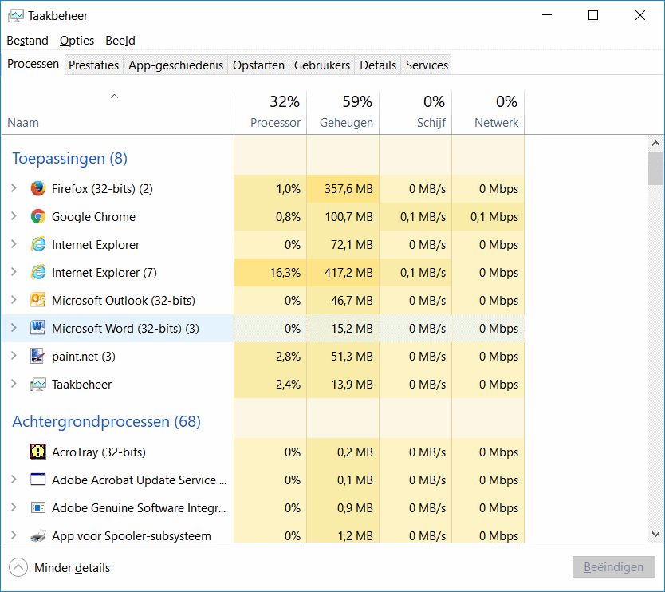

Het OS (Operating system) wordt ook wel het bestandsbestuur genoemd. Het bestandsbestuur zorgt voor de communicatie tussen de applicatiesoftware met de hardware.
Als voorbeeld kan je gebruiken de communicatie tussen de onderdelen die verwerkt zitten in je computer. Verder worden de functies van het bestandbestuur onderverdeelt in drie verschillende dingen.
Als je hieronder kijkt kan je zien welke drie functies dat zijn met verdere uitleg over de bepaalde functies
Functies bestandsbestuur
beheer van het randapparatuur
bestandsbeheer
taakbeheer
beheer van randapparatuur
Over het randapperatuur krijgt u op een andere pagina verdere uitleg over de werking van randapparatuur.
Als u op de volgende link klinkt gaat u naar deze pagina voor verder uitleg over randapparatuur.
Informatie over randapparatuur
bestandsbeheer
Als u op de volgende link klikt wordt u doorverwezen naar een filmpje die u verteld wat bestandsbeheer inhoudt.
Na het zien van het volgende filmpje weet u precies wat het bestandbeheer inhoudt.
bestandsbeheer uitleg
taakbeheer
Hieronder zie je een afbeelding met als voorbeeld hoe het taakbeheer van een Windows computer eruit ziet.
